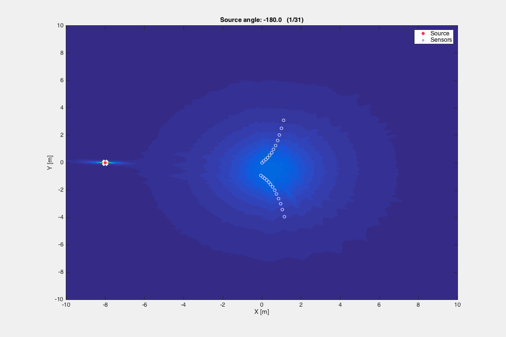
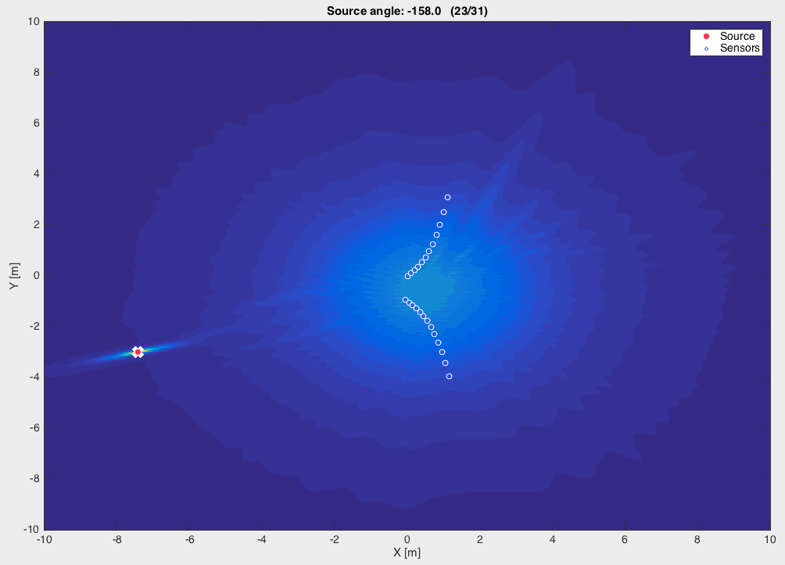
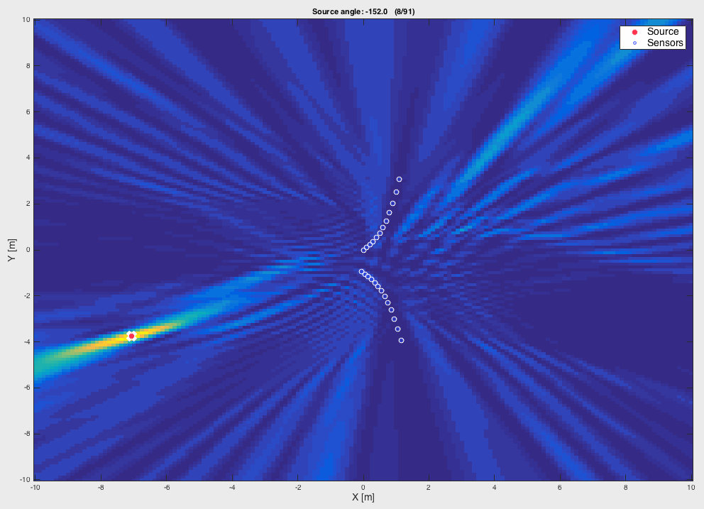

Using the same generalized Vandermonde vector as described in the Bartlett beamformer, the Capon beamformer is computed. The results follow the earlier ones obtained with the Bartlett beamformer, but wit a much sharper finding of the source location.
The results from the Bartlett and the Capon are compared as an example here:

Fig. 1: results from the Capon beamformer using a horn array.

Fig. 2: results from the Bartlett beamformer using a horn array.
It can be observed that the Capon beamformer does not have so many undesired "side lobes" as the Bartlett, thus offering a much "cleaner" result.
It is interesting to note, although, that the Capon beamformer shows a much higher "background level" as it gets closer to the array location. This has not been further studied, but it may impact the performance for close distances.
A single program that performs the beamforming: caponBeamforming.m. It generates a mat file that can be plot using the same utility from the Bartlett beamforming.